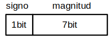
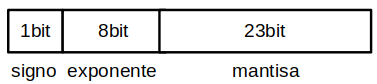
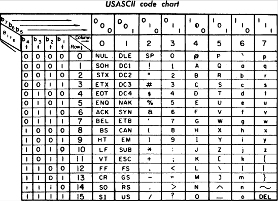
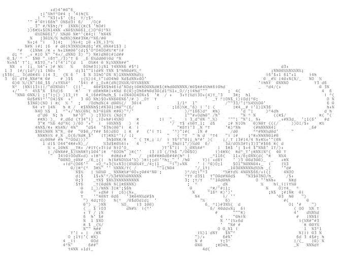

Sistemas de codificación¶
Codificación numérica¶
Binario Puro¶
Solo pueden representar nº positivos
23 10) = 001011 BP,n=8)
Signo y magnitud¶
El primer bit para representar el signo
Ejemplo : n=8
Rango -(2 n-1- 1) ≤ x ≤ (2 n-1-1) ; este caso con n=8 [ -127 ≤ x ≤ 127 ]
El complemento a uno de un nº negativo cambiamos 0 por 1 y 1 por 0, dejando el signo (1 inicial)
Complemento a dos es (C1+1). El complemento C1 y C2 solo cambian cuando el número es negativo.
Codificación en coma fija y en coma flotante¶
La codificación en coma fija se utiliza para referirse a los números con una cantidad de cifras decimales constate. La representación de los números en coma flotante, es una representación exponencial, de forma que la posición de la coma no es fija y pueden, así, con mayor precisión, lo cual es muy interesante en trabajos de calculo científico. El estándar más extendido en coma flotante es el estándar IEEE 754.
Estándar IEEE 754¶
(Institute of Electrical and Electronics Engineers)
Precisión simple 32 bits
Ejemplo :
Pasamos a binario:
19,5625 10)`= 10011,1001 :sub:`2)
Colocamos la coma decimal a la derecha del bit más significativo
10011,1001 = 1,00111001*2 4)
Escribir exponente en exceso a 2 n-1 – 1
4+(2:sub:8-1 – 1) = 131 10) = 10000011 2)
Finalmente queda:
Codificación alfanumérica¶
ASCII¶
“American Standar Code for Information Interchange”, cada carácter se codificaba mediante 7 digitos binarios (128 caracteres diferentes). Fue creado para el juego de caracteres ingleses más corriente. Del 33 al 126 se conocen como caracteres imprimibles, representan letras, signos de puntuación y varios símbolos
 {kind=link}
ASCII Extendido¶
Debido a las limitaciones del ASCII se definen varios códigos de 8 bits para lenguas semejantes, entre ellos el ASCII Extendido, por lo tanto no dan una solución final al problema.
UNICODE¶
Como solución a estos problemas en 1991 se acordó utilizar el estándar Unicode, es una gran tabla, que asigno un código a cada uno de los más de cincuenta mil símbolos, los cuales abarcan los alfabetos europeos, chinos, japoneses, coreanos, etc
UTF-8¶
(8-bit unicode transformation format) es un formato de codificación de caracteres UNICODE, utilizando símbolos de longitud variable. UTF-8 divide los caracteres unicode en varios grupos, en función del n.º de bytes para codificarlos.
1 byte → ASCII → 0xxxxxxx “El primer bit es 0”
2 bytes → Caracteres latinos 110xxxx 10xxxxx
3 bytes → Chino, Japones y Coreano → 1110xxx 10xxxxx 10xxxxx
4 bytes → Símbolos matemáticos, alfabetos clásicos → 11110xxx 10xxxxxx 10xxxxxx 10xxxxxx
Estos son algunos ejemplos, entre otros como la codificación BCD, EBCDIC, Biquinaria, IEEE 754 de 64bits, Fieldata, EBCDIC, etc ….